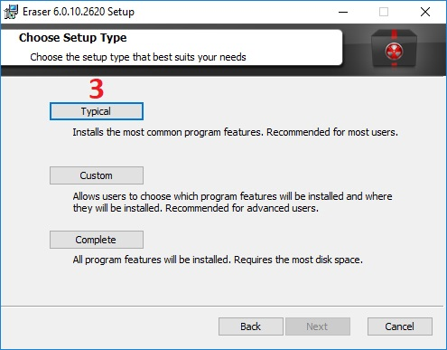
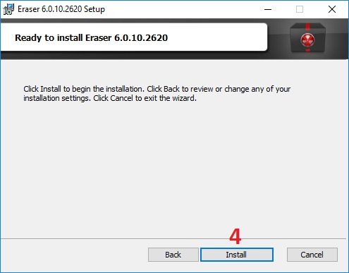
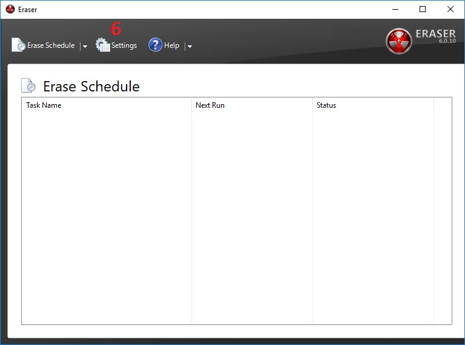

Authy || أوثي
الاسم: أوثي
المهمة: إضافة طبقة حماية أخرى غير اسم المستخدم وكلمة المرور حيث يقوم بتوليد كلمة سر مكونة
من 6 أرقام
أنظمة التشغيل التي يعمل عليها: ويندوز، ماك أندرويد، آيفون "IOS"
الثمن: مجاني
كيف يعمل؟
الغاية من استخدام البرنامج هي إضافة طبقة حماية أخرى غير اسم المستخدم وكلمة المرور حيث يقوم بتوليد كلمة سر مكونة من 6 أرقام نحصل عليها عن طريق التطبيق، وندخلها بعد إدخال كلمة السر الأساسية، وبالتالي يتم تسجيل الدخول بخطوتين عوضاً عن خطوة واحدة
يمتاز برنامج جيتسي بالتالي:
- إنشاء قناة مشفرة للاتصال
- المجهولية: حيث لا يوجد حاجة لإنشاء حساب أو إدخال أية معلومات شخصية لإجراء محادثة
- يمكن إجراء المحادثة أو الإجتماع عبر متصفح الإنترنت بدون الحاجة لتنصيب التطبيق على الجهاز "يمكن تنصيب تطبيق "جيتسي" على اجهزة الكمبيوتر أو هواتف آندرويد و IOS"
يتكون هذا الدليل من ثلاثة أقسام رئيسية :
1- تنصيب برنامج أوثي
-
الحصول على التطبيق:
- لجميع الأجهزة نضغط هنا
-
تظهر الصفحة التالية، نقوم باختيار المناسب بحسب الجهاز الخاص بنا
-
بعد تحميل التطبيق نقوم بفتحه، تظهر النافذة التالية:
- نقوم بإدخال رمز الدولة الخاص بنا
- نقوم بإدخال رقم الهاتف المحمول
- نضغط "Submit"
-
عند الضغط على "Submit" تظهر النافذة التالية:
- نقوم بإدخال الايميل الشخصي
- نضغط "Submit"

-
عند الضغط على "Submit" تظهر النافذة التالية: وهي لتأكيد الحساب، حيث يقوم التطبيق بارسال كود سري بأحد
الطريق التي تختارها في الخطوة التالية، ثم تقوم بإدخال هذا الكود لتأكيد الحساب
- في حال كنت تمتلك حساب Authy مسبقا تقوم باختيار هذا الخيار ليتم التأكيد عن طريق الحساب الموجود على جهاز آخر
- لإرسال الكود عن طريق واتساب || Whatsapp
- لإرسال الكود عن طريق رسالة SMS على رقم الهاتف المحمول الذب سبق وأدخلناه
- لتلقي الكود عن طريق مكالمة صوتية عادية على الرقم الذي سبق وأدخلناه
-
بعد اختيار الطريقة المناسبة، يقوم التطبيق بإرسال رسالة تحتوي على كود نقوم بإدخال في المكان المخصص لها
كما في الصورة التالية
- نقوم بإدخال كود التأكيد
- في حال أردنا تغيير الطريقة التي نتلقى بها كود التأكيد، نضغط على هذا الخيار فيقوم بإعادتنا إلى الخطوة السابقة
- نضغط على الخيار Typical
 -
نضغط على خيار "Install"
 -
عند الإنتهاء، تظهر الرسالة التالية، وتعني بأنه تم تنصيب البرنامج
عند تفعيل الخيار "Run Eraser" فإن البرنامج سوف يعمل عند الضغط على خيار "Finish"

-
بعد تشغيل البرنامج، نقوم بضبط الإعدادات،
من النافذة الرئيسية للبرنامج، نضغط على الخيار "Settings"

من صفحة "Settings"
سنقوم بضبط اﻹعدادت الافتراضية لعملية الحذف -
من الخيار "Default file erasure method" نحدد خوارزمية وعدد المرات التي نريد أن يتم بها الكتابة فوق
الملف
الذي نريد حذفه
الخيار الأفضل هو Gutmann بحيث يقوم بالكتابة 35 مرة
يمكن الاختيار بينه وبين الخيارات الاُخرى التي تقوم بالكتابة بين 3 و 7 مرات
- بعد تحديد الخيار، نقوم بحفظ الإعدادات عبر الضغط على الخيار "Save Settings" في أعلى الصفحة
يقوم الحذف الآمن على طريقة، حذف الملف أو الملفات، ثم الكتابة فوقها عدة مرات متتالية ببيانات ذات نمط مناسب، لتكون عملية الإسترجاع صعبة جداً إن لم تكن مستحيلة
يقدم برنامج"إيريزر | Eraser" خيار الكتابة مرة أو 2 أو 3 أو 7 أو 35 مرة فوف الملف الذي يتم حذفه، كلما زاد عدد مرات الكتابة فوق الملف المحذوف، تتعقد عملية استعادة الملف، ويأخذ حذف الملف وقت أطول بحسب حجمه